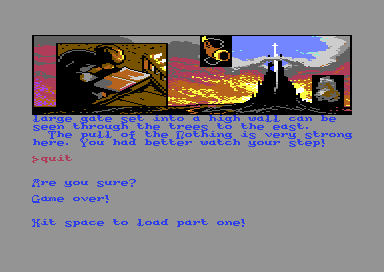
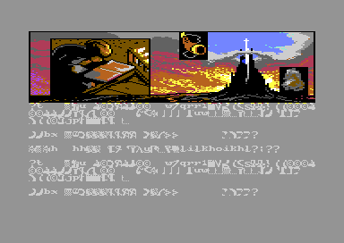
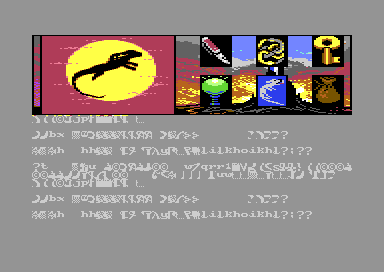
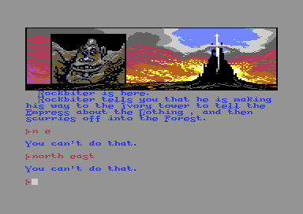
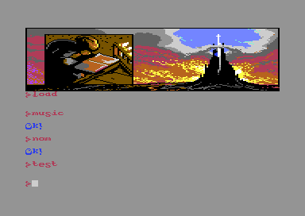
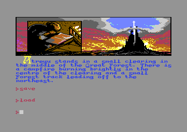
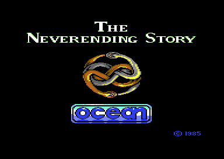

<meta charset="utf-8">
<meta name="viewport" content="width=device-width, initial-scale=1">
<title>{{title}}</title>
<link rel="preconnect" href="https://fonts.googleapis.com">
<link rel="stylesheet" href="https://fonts.googleapis.com/css2?family=Lato:wght@400;700;900&family=IBM+Plex+Mono:wght@400;500&display=swap">
<style>
:root{
  --bg:#23262d; --paper:#e9e7e1; --surface:#ffffff; --surface-2:#f1efea; --line:#d5d3cc; --line-soft:#e0ded8;
  --ink:#2f3136; --ink-soft:#55585f; --ink-mute:#80838a;
  --link:#1f5fa8; --link-hover:#154480; --accent:#1f5fa8;
  --amber:#c25a00; --cyan:#1f5fa8; --coral:#d04a3a; --green:#2a8a4a; --violet:#4a5bd6; --hl:#fff0c2;
  --chip:#2f3136; --chip-ink:#ffffff;
  --c64blue:#40318d; --c64grey:#686868;
  --fd:'Lato',system-ui,sans-serif; --fb:'Lato',system-ui,sans-serif; --fm:'IBM Plex Mono',ui-monospace,Menlo,monospace;
  --col:1080px; --gx:68px; --fs:17px; --lh:1.6; --hw:900; --h1:46px; --h2:26px; --sy:48px; --pp:26px; --r:10px;
  --plate-shadow:0 1px 2px rgba(0,0,0,.05),0 4px 14px rgba(0,0,0,.05);
}
*{box-sizing:border-box}
html{background:var(--bg);min-height:100%}
body{background:var(--paper);color:var(--ink);font-family:var(--fb);font-size:var(--fs);line-height:var(--lh);max-width:var(--col);margin:0 auto;min-height:100vh;padding:0 0 4rem}
h1,h2,h3{font-weight:var(--hw);letter-spacing:-.01em;text-wrap:balance;color:var(--ink);margin:0}
.wrap{padding:0 var(--gx)}
.hero{padding:48px var(--gx) 8px;text-align:left}
.eyebrow{font-family:var(--fm);font-size:12px;letter-spacing:.08em;text-transform:uppercase;color:var(--ink-mute);margin:0 0 10px}
.hero h1{font-size:var(--h1);line-height:1.15;letter-spacing:-.02em;margin:0 0 14px}
.hero .sub{margin:0 0 .6em;color:var(--ink-soft)}
section{padding:var(--sy) 0 24px}
section:last-of-type{border-bottom:none}
.fig{font-family:var(--fm);font-size:12px;letter-spacing:.08em;text-transform:uppercase;color:var(--ink-mute);margin:0 0 10px}
h2.t{font-size:var(--h2);margin-bottom:12px}
.lede{color:var(--ink-soft);margin:0 0 30px}
.plate{background:var(--surface);border:1px solid var(--line);border-radius:var(--r);padding:var(--pp);box-shadow:var(--plate-shadow)}
.cap{font-size:14px;color:var(--ink-mute);margin-top:14px;line-height:1.55}
.cap b{color:var(--ink);font-weight:700}
code{font-family:var(--fm);font-size:.82em;background:var(--chip);color:var(--chip-ink);border-radius:4px;padding:2px 6px;white-space:nowrap}

a{color:var(--link)} a:hover{color:var(--link-hover)}
.nes-pics{display:grid;grid-template-columns:1fr 1fr;gap:16px;margin:22px 0 0}
.nes-pics figure{margin:0}
.nes-pics img{display:block;width:100%;height:auto;image-rendering:pixelated;border-radius:4px}
.nes-pics figcaption{font-size:13px;color:var(--ink-mute);margin-top:6px}
.nes-cv{display:block;width:100%;height:auto;image-rendering:pixelated;background:#000;border-radius:3px}
.nes-fwrap{position:relative;max-width:768px;margin:0 auto}
.nes-mark{position:absolute;left:0;right:0;height:0;border-top:2px dashed #ff932f;pointer-events:none}
.nes-mark span{position:absolute;right:4px;top:-20px;font-family:var(--fm);font-size:11px;color:#fff;background:rgba(0,0,0,.7);padding:1px 5px;border-radius:3px}
.nes-bar{display:flex;flex-wrap:wrap;align-items:center;gap:8px 14px;margin:0 0 12px;font-family:var(--fm);font-size:12.5px;color:var(--ink-soft)}
.nes-bar label{display:inline-flex;align-items:center;gap:6px;cursor:pointer}
.nes-bar select,.nes-bar input[type=text]{font:inherit;background:var(--surface);border:1px solid var(--line);color:var(--ink);padding:5px 8px;border-radius:6px;max-width:100%}
.nes-bar input[type=text]{min-width:min(100%,320px);text-transform:uppercase}
.nes-bar input[type=range]{width:min(100%,260px)}
.nes-bar button{font:inherit;background:var(--surface);border:1px solid var(--line);color:var(--ink);padding:4px 9px;border-radius:6px;cursor:pointer}
.nes-bytes{display:flex;flex-wrap:wrap;gap:3px;margin:10px 0 4px;font-family:var(--fm);font-size:12px}
.nes-bytes span{padding:2px 4px;border-radius:3px;background:var(--surface-2);border-bottom:3px solid var(--c,#ccc)}
.nes-bytes span.nes-on{background:var(--hl)}
.nes-key{display:flex;flex-wrap:wrap;gap:6px 16px;font-family:var(--fm);font-size:12px;color:var(--ink-soft);margin:6px 0 0}
.nes-key i{display:inline-block;width:10px;height:10px;border-radius:2px;margin-right:6px;background:var(--c)}
.nes-tbl{border-collapse:collapse;width:100%;font-size:14px;margin:4px 0 0}
.nes-tbl th{font-family:var(--fm);font-size:11.5px;letter-spacing:.05em;text-transform:uppercase;color:var(--ink-mute);font-weight:500;text-align:left;padding:6px 8px;border-bottom:1px solid var(--line)}
.nes-tbl td{padding:6px 8px;border-bottom:1px solid var(--line-soft);vertical-align:top}
.nes-tbl td.nes-n{font-family:var(--fm);font-size:12.5px;white-space:nowrap}
.nes-script{font-family:var(--fm);font-size:12.5px;line-height:1.6;margin:10px 0 0;padding:0;list-style:none}
.nes-script li{margin:0 0 6px}
.nes-script .nes-if{color:var(--violet)}
.nes-script .nes-do{display:block;padding-left:1.4em}
.nes-out{font-family:var(--fm);font-size:12.5px;line-height:1.7;margin:10px 0 0;padding:10px 12px;background:var(--surface-2);border-radius:6px;min-height:2.4em}
.nes-out b{color:var(--ink)}
.nes-two{display:grid;grid-template-columns:minmax(0,1fr) minmax(0,1fr);gap:22px}
.nes-icons{display:flex;flex-wrap:wrap;gap:6px;margin:10px 0 0}
.nes-icons canvas{width:64px;height:64px;image-rendering:pixelated;background:#000;border-radius:3px;cursor:pointer;outline:2px solid transparent}
.nes-icons canvas.nes-on{outline-color:#ff932f}
.nes-icons canvas.nes-dim{opacity:.4}
.nes-frame312{display:block;width:100%;height:auto;image-rendering:pixelated;border-radius:3px}
.nes-big{font-family:var(--fm);font-size:28px;font-weight:500;color:var(--ink)}
.nes-err{color:var(--coral);font-family:var(--fm);font-size:13px}
.nes-mem{display:flex;height:34px;border-radius:5px;overflow:hidden;margin:8px 0 4px;font-family:var(--fm);font-size:11px}
.nes-mem div{display:block;min-width:0;line-height:34px;text-align:center;padding:0 4px;color:#fff;white-space:nowrap;overflow:hidden;text-overflow:ellipsis;cursor:pointer;border-right:1px solid rgba(255,255,255,.5)}
.nes-mem div.nes-on{box-shadow:inset 0 0 0 3px #ff932f}
details.nes-more{margin-top:14px}
details.nes-more summary{cursor:pointer;font-family:var(--fm);font-size:12.5px;color:var(--link)}
.nes-one{display:block;max-width:420px;margin-bottom:18px}
.nes-one img{max-width:384px}
.nes-two figure{margin:0}
.nes-two figure img{display:block;width:100%;height:auto;image-rendering:pixelated;border-radius:4px}
.nes-two figcaption{font-size:13px;color:var(--ink-mute);margin-top:6px}
.nes-tbl tr.nes-bad td{background:#fbe3df}
.nes-bar button:disabled{opacity:.4;cursor:default}
.nes-bar button.nes-on{outline:2px solid #ff932f}
.nes-unseen{display:flex;gap:16px;align-items:flex-start;flex-wrap:wrap}
.nes-unseen canvas{image-rendering:pixelated;border-radius:3px;background:#000}
#nes-ucv{width:128px;height:128px}
.nes-svgwrap{overflow-x:auto;margin:4px 0 8px}
#nes-svg{display:block;width:100%;height:auto;font-family:var(--fm);font-size:12px}
#nes-svg .nes-node{cursor:pointer}
#nes-svg .nes-node rect:last-of-type{fill:var(--surface);stroke:#80838a;stroke-width:1.5}
#nes-svg .nes-node text{fill:var(--ink)}
#nes-svg .nes-node:hover rect:last-of-type,#nes-svg .nes-node:focus rect:last-of-type{stroke:#1f5fa8;stroke-width:2.5}
#nes-svg .nes-node.nes-on rect:last-of-type{fill:#ff932f;stroke:#c25a00}
#nes-svg .nes-node:focus{outline:none}
.nes-gap{margin-top:10px}
.nes-facts{margin-top:14px}
.nes-h{font-family:var(--fm);font-size:11.5px;letter-spacing:.05em;text-transform:uppercase;color:var(--ink-mute);margin:6px 0 0}
.nes-tbl th[scope]{white-space:nowrap}
.nes-bar label{max-width:100%;min-width:0}
.nes-bar label select{min-width:0;flex:0 1 auto;text-overflow:ellipsis}
@media (max-width:760px){.nes-pics,.nes-two{grid-template-columns:1fr}}
@media (max-width:650px){:root{--gx:18px;--h1:36px;--sy:32px;--pp:14px}}
</style>
<!-- tabs -->
<header class="hero">
  <p class="eyebrow">{{platform}} · {{year}} · {{publisher}}</p>
  <h1>{{title}}</h1>
  <p class="sub">With the crackers' loader, restarting after Part 2 loads Part 3 where Part 1 should be, and from there the game cannot be played.</p>
</header>
<main class="wrap">
<section id="nes-restart">
  <p class="fig">01 · The crackers' loader</p>
  <h2 class="t">Bug: restarting after Part 2 loads Part 3</h2>
  <p>Die in Part 2, or type QUIT and answer Y, and the game asks for Part one: "Game over!", then "Hit space to load part one!". Press Space and the drive loads Part 3. The game carries on as if it were in Part 1, reading Part 3's tables, and fills the screen with letters that make no sense.</p>
  <div class="nes-pics">
    <figure><figcaption>QUIT and Y in Part 2's first room, recorded in the emulator.</figcaption></figure>
    <figure><figcaption>After Space: the load returned with the name "PART 3", and Part 3's first bytes at <code>$2F00</code>.</figcaption></figure>
  </div>
  <p>The fault is in the loader the crackers wrote for their disk copy. The game asks for a part by number: <code>SHOW_PART_LOAD_SCREEN</code> (<code>$0439</code>) prints the name of the part from <code>CURRENT_PART_NO</code>, then calls the loader. The loader ignores the number. It adds one to the digit of the file name "PART 0" (<code>$C009</code>, copied to <code>$9709</code> when the opening ends) and loads whatever that names, so the files come in the order they were first loaded and never go back. A restart from Part 1 is safe, because the game reloads Part 1 only when another part has been loaded since (<code>LOADED_PART_NO</code>, <code>$14E9</code>).</p>
  <div class="plate">
    <div class="nes-bar" id="nes-steps"></div>
    <table class="nes-tbl" id="nes-log"></table>
    <canvas class="nes-cv" id="nes-rcv" width="640" height="240"></canvas>
    <p class="cap" id="nes-rcap"></p>
  </div>
  <p>Part 1's start script (<code>$2968</code>, in the engine) runs after every load of Part 1 and prints event 27, Cairon's message to the peoples of Fantasia. Part 3 has 9 events, so the pointer the printer reads for event 27 lies past the end of Part 3's table, and the bytes it points at are not text. Step through a game above: after each load the page prints, with its port of the game's printer, what the start script prints.</p>
</section>

<section id="nes-part4">
  <p class="fig">02 · The end of the game</p>
  <h2 class="t">Bug: winning asks the drive for a Part 4</h2>
  <p>The game ends in the Empress's quarters at the top of the Ivory Tower (room <code>$7C</code> in Part 3), and the win restarts the game. The restart asks for Part one, as above, and the loader, which has loaded three files, asks the drive for "PART 4". There is no such file. The KERNAL's LOAD returns with the error for a missing file, the game carries on with Part 3 still in memory, and the screen fills with the same nonsense as after the restart from Part 2. Press <b>Win</b> in the stepper above to follow it.</p>
  <figure class="nes-pics nes-one"><figcaption>After the ending, recorded in the emulator: LOAD came back with carry set and A = 4, file not found, for "PART 4", and <code>$2F00</code> still held Part 3.</figcaption></figure>
</section>

<section id="nes-ne">
  <p class="fig">03 · Directions</p>
  <h2 class="t">Quirk: "N E", as the instructions spell it, does not go north-east</h2>
  <p>Ocean's instructions list the directions as "North (or N)", "North East (or N E)" and so on. Type N E, or NORTH EAST, and the game answers "You can't do that." Only NE and NORTHEAST work.</p>
  <div class="nes-two">
    <figure><figcaption>N E and NORTH EAST in the first room, where NE leads to the forest track. Recorded in the emulator.</figcaption></figure>
    <div class="plate">
      <div class="nes-bar" id="nes-neb"></div>
      <div class="nes-out" id="nes-neo"></div>
      <p class="cap">The parser on the How it works page, a port of <code>PARSE_INPUT</code> (<code>$122F</code>), <code>RESOLVE_VERB_NOUN</code> and <code>DISPATCH_COMMAND</code>, held to the game's code by <code>test_parser.js</code>.</p>
    </div>
  </div>
  <p>The parser looks each word up by its first three letters, and N and E are each a verb, north and east. <code>RESOLVE_VERB_NOUN</code> (<code>$1396</code>) takes the first verb, and takes the next word, whatever it is, as the noun: N with the noun E. The ten direction verbs have one pair each in the table of 70 (<code>$19A0</code>), all with no noun, so N with a noun matches nothing and prints sentence 3. NORTHEAST works because the parser looks at letters 4-6 of NORTH and SOUTH: THE or THW turns the word into one of the diagonals (<code>$1335</code>). The instructions are the cassette's, as transcribed for the Amstrad release: the C64 copy's own were not found.</p>
</section>

<section id="nes-ok">
  <p class="fig">04 · Words that do nothing</p>
  <h2 class="t">Secret: MUSIC and NOM answer "Ok!" and do nothing else</h2>
  <p>Two verbs are in the vocabulary that the instructions never mention: any word starting MUS, and NOM. Each has a pair of its own (pairs 28 and 29), whose scripts run an action that does nothing, then print "Ok!" (<code>$2B25</code>, <code>$2B29</code>). The actions, <code>$0B</code> and <code>$0C</code>, lead to single <code>RTS</code> instructions at <code>$0699</code> and <code>$069A</code>. TEST, or T, runs pair 30, whose one action, <code>$0F</code>, is a <code>NOP</code> and an <code>RTS</code> (<code>$118F</code>): it prints nothing at all.</p>
  <figure class="nes-pics nes-one"><figcaption>MUSIC, NOM and TEST in the first room, recorded in the emulator.</figcaption></figure>
  <p>What the three verbs did before their actions were emptied is not in this copy.</p>
</section>

<section id="nes-save">
  <p class="fig">05 · Saving</p>
  <h2 class="t">Secret: SAVE and LOAD were switched off, but the tape code is still there</h2>
  <p>The instructions explain how to save a game to tape and load it again, and say that the game asks, when it starts, whether to restore a saved game. In this copy SAVE and LOAD print nothing at all, and the question is never asked.</p>
  <figure class="nes-pics nes-one"><figcaption>SAVE and LOAD in the first room, recorded in the emulator.</figcaption></figure>
  <p>The SAVE and LOAD actions each jump to a single <code>RTS</code> (<code>$1189</code> to <code>$0491</code>, <code>$118C</code> to <code>$045F</code>). The routines they once called are still in the engine, whole: <code>DISK_SAVE_GAME</code> (<code>$0494</code>) and <code>DISK_LOAD_GAME</code> (<code>$0461</code>), with a prompt for the file's name ("Please enter the filename", <code>$04C8</code>), and they name device 1, the cassette (<code>$050C</code>). <code>INIT_GAME</code> (<code>$14D6</code>) is a jump over <code>ASK_RESTORE_GAME</code>, the routine that asks the question. Two of the engine's 68 sentences read like parts of the same feature, and nothing prints them:</p>
  <div class="plate"><canvas class="nes-cv" id="nes-scv" width="640" height="96"></canvas><p class="cap">Sentences <code>$33</code> and <code>$11</code>, printed by the page's port of <code>PRINT_SENTENCE</code> (<code>$099B</code>).</p></div>
  <p>Whether Ocean shipped the game this way or the crackers switched saving off is not known: the original cassette was not examined.</p>
</section>

<section id="nes-unseen">
  <p class="fig">06 · Pictures nobody sees</p>
  <h2 class="t">Secret: a crucifix and a picture the game never shows</h2>
  <p>Icon slot 27 holds a gold cross (<code>$B640</code>), and the vocabulary has the word CRUCIFIX (noun <code>$5A</code>, object 40). The object starts the game gone, and no script ever puts it anywhere. Even if one did, its icon could not be drawn: <code>RESOLVE_NOUN</code> (<code>$15E3</code>) finds an object's icon by looking its number up in a map of 36 (<code>$22A4</code>), the map has no entry for object 40, and slot 27's entry holds the number of Auryn, which an earlier slot already matches.</p>
  <p>Picture 49, Atreyu buried to the waist in rubble, is one of Part 3's. No room has it as its picture (<code>OBJ_ROOM_TABLE</code>, <code>$0D4F</code>), and no script of the engine or the three parts shows it.</p>
  <div class="plate">
    <div class="nes-unseen"><canvas id="nes-ucv" width="128" height="128"></canvas><canvas class="nes-cv" id="nes-pcv" width="640" height="160"></canvas></div>
    <p class="cap">Icon 27 and picture 49 over the backdrop, drawn from the game's bytes by the page's port of <code>BLIT_ROOM_GRAPHIC</code> (<code>$05BF</code>), which <code>test_pictures.js</code> holds to the game's routine.</p>
  </div>
</section>

<section id="nes-trees">
  <p class="fig">07 · The vocabulary</p>
  <h2 class="t">Quirk: the two trees have names nobody can type</h2>
  <p>Objects 2 and 50 are both trees, which no room ever lists (both description pointers lead to <code>$2338</code>, whose <code>$40</code> marks an object left out of the list), one in Morla's swamp (room <code>$11</code>) and one at the foot of the enormous tree near the Southern Oracle (room <code>$23</code>). Each has a noun of its own, <code>$34</code> and <code>$64</code>, and the vocabulary spells both TRE (<code>$1B96</code>, <code>$1C52</code>). It also has a third TRE, earlier in the list, for the noun <code>$CB</code> (<code>$1B82</code>), and the lookup stops at the first match (<code>VOCAB_LOOKUP</code>, <code>$12C4</code>). Typing TREE always gives <code>$CB</code>: CLIMB TREE works, because the climbing scripts do not ask which noun was typed, and GET TREE answers "You can't do that."</p>
  <p>Two more entries can never be used:</p>
  <ul>
    <li>The word "..." is verb <code>$11</code>, and none of the 70 pairs names it.</li>
    <li>Pairs 19 and 24 are DROP with the noun <code>$FF</code>. <code>$FF</code> is the id of AND, and the parser treats it as the end of a command, never as a noun, so neither pair can match.</li>
  </ul>
</section>

<section id="nes-loading">
  <p class="fig">08 · The crack</p>
  <h2 class="t">Secret: the crack keeps Ocean's tape loading picture</h2>
  <p>This copy is a crack of the cassette by MrL and Dr Bakterius, "CRACKED AT 11/23/85". After the crackers' scrolling intro it shows the picture Ocean's tape showed while it loaded: the title, Auryn's two snakes and the Ocean logo. The crack's code at <code>$CA00</code> copies the game's first kilobyte into place from <code>$C200</code>, shows the picture (its bitmap at <code>$4000</code>, its colours at <code>$6000</code> and <code>$C600</code>) until a key is pressed, and starts the game at <code>$0400</code>. Part 1's load then overwrites the picture.</p>
  <figure class="nes-pics nes-one"><figcaption>The loading picture, recorded in the emulator before the game starts.</figcaption></figure>
</section>

<section id="nes-leftovers">
  <p class="fig">09 · Leftovers</p>
  <h2 class="t">Secret: code to return to BASIC, hidden in two icon slots</h2>
  <p>Icon slots 4 and 5 (<code>$A7E0-$A91F</code>) hold code instead of pictures: the raster interrupt that splits the screen, the opening's interrupt, and two routines nothing calls. <code>RESTORE_SYSTEM_TO_BASIC</code> (<code>$A893</code>) clears the zero page and pages 2 and 3, copies the KERNAL's vectors back and calls BASIC's own start-up routines, and <code>INSTALL_GAME_IRQ</code> (<code>$A8CC</code>) sets up the game's interrupt. No object's icon number leads to slots 4 and 5, so the code is never drawn as a picture.</p>
  <ul>
    <li><code>$9FEF-$9FFF</code>, just past the tune's driver, end with the text "/MONITOR". Nothing reads it.</li>
    <li>The crackers' disk loader at <code>$C000</code> is followed by the remains of a tape loader (<code>$C022-$C175</code>). It names CIA 2's timer B and CIA 1's FLAG interrupt, which a tape loader uses to time the tape's pulses, and it never runs.</li>
    <li><code>$9600-$967F</code> and <code>$EFA0-$EFFF</code> hold bytes nothing reads.</li>
  </ul>
</section>

<section id="nes-open">
  <p class="fig">10 · Open questions</p>
  <h2 class="t">What we have not settled</h2>
  <ul>
    <li><b>MUSIC, NOM and TEST.</b> What the three verbs did before their actions were emptied.</li>
    <li><b>Saving.</b> Whether Ocean's own cassette could save and restore a game, and so who switched it off.</li>
    <li><b>The crucifix.</b> What the object was for: no text in the three parts mentions it.</li>
  </ul>
</section>
</main>
<footer style="margin:16px 0 0;padding:22px var(--gx) 0;border-top:1px solid #e0ded8;font-family:'IBM Plex Mono',ui-monospace,Menlo,monospace;font-size:12px;color:#80838a"><a href="https://github.com/gamesexplained/gamesexplained" style="color:#1f5fa8;text-decoration:none">GitHub</a> · <a href="https://discord.gg/3V9GWyRDWV" style="color:#1f5fa8;text-decoration:none">Discord</a><br>© Games Explained contributors. Write-ups, facts and symbol maps are available under <a href="https://creativecommons.org/licenses/by-sa/4.0/" style="color:#1f5fa8;text-decoration:none">CC BY-SA 4.0</a>; code under <a href="https://opensource.org/licenses/MIT" style="color:#1f5fa8;text-decoration:none">MIT</a></footer>
<script>
/* nes-text */
// The engine's text printer, ported routine by routine. nesPrinter(m, st) prints from the tables
// in m, the engine with a part loaded, onto st, the state the routines share:
//   st.ram     a Uint8Array(65536): the screen matrix at $CC00-$CFE7
//   st.colour  a Uint8Array(1024): colour RAM, $D800-$DBE7, four bits a byte
//   st.at      the cursor, 0-999 from $CC00 (SCREEN_CURSOR_PTR $06/$07, and $08/$09 for colour)
//   st.column  CURRENT_COLUMN ($24), 0-39
//   st.ink     the colour each character gets, $0286
//   st.cap     UPPERCASE_LETTER_FLAG, the operand at $0AFF: 1 prints the next letter A-Z as it is
// and reads from m the switches the engine keeps in its own code: $0AF5, 1 in play (set by
// $076A), which lets letters print in lower case, and $0949, 0 except while the line editor
// shows its cursor. The calls:
//   char(a)       PRINT_CHARACTER ($08DB): screen code a and the ink at the cursor, the cursor on;
//                 reaching $CFE8 scrolls rows 11-24 up a row ($08FF) and clears row 24
//   line()        PRINT_EMPTY_LINE ($0B4B): spaces to the start of the next line, a whole line
//                 when the cursor is already at a line's start
//   term(p)       PROCESS_TERM ($0A0E): the compressed text at p up to its '@'. A byte with bit 7
//                 set is word n of the dictionary (pointers at the address in $1C67, each word its
//                 length and then its letters); any other byte starts a literal word, which runs
//                 until a capital, a dictionary byte or '@'. A word that would reach column 41
//                 starts a new line; a space follows each word unless the next starts with '.'
//                 or the cursor is at a line's start
//   word(p, n)    PRINT_WORD ($0ADB): n bytes from p. '.' sets cap, '<' starts a line, $FF takes
//                 the next byte as the ink, and a letter A-Z prints as a capital only when cap is
//                 set (which clears it) or $0AF5 is 0, otherwise in lower case (+ $20)
//   sentence(i)   PRINT_SENTENCE ($099B): a line, cap set, the engine's sentence i
//   event(i)      PRINT_EVENT_TEXT ($09D7): cap set, a line and two spaces, the part's event i
//   room(r)       PRINT_ROOM_TEXT ($0B58): a line, two spaces, the first letter as a drop capital
//                 two cells high in yellow ($0957: glyphs $7B + 4 x (letter - 'A') to + 3), then
//                 the rest in blue (ink 6). r is the room's number across the game; the part's
//                 first room, $0DCC + the part in $2940, is subtracted
// Each returns the address after what it read, where that is the routine's to know.
function nesPrinter(m, st) {
  const w16 = (a) => m[a] | m[a + 1] << 8;
  const P = {
    char(a) {
      st.ram[0xCC00 + st.at] = a; st.colour[st.at] = st.ink & 15; st.at++;
      st.column = st.column === 39 ? 0 : st.column + 1;
      if (st.at === 1000) {                       // $CFE8: rows 11-24 to rows 10-23 ($0905)
        for (let i = 0; i < 560; i++) { st.ram[0xCD90 + i] = st.ram[0xCDB8 + i]; st.colour[400 + i] = st.colour[440 + i]; }
        st.at = 960;
        for (let i = 39; i >= 0; i--) st.ram[0xCC00 + 960 + i] = 0x20;
      }
      if (m[0x0949]) { st.ram[0xCC00 + st.at] = 0x3D; st.colour[st.at] = 15; }
    },
    line() { do P.char(0x20); while (st.column !== 0); },
    word(p, n) {
      do {
        const a = m[p];
        if (a === 0x2E) { st.cap = 1; P.char(0x2E); }
        else if (a === 0x3C) P.line();
        else if (a === 0xFF) { p = (p + 1) & 0xFFFF; n = (n - 1) & 255; st.ink = m[p]; }
        else if (a >= 0x41 && a < 0x5B) {
          if (!m[0x0AF5]) P.char(a);
          else if (st.cap) { st.cap = 0; P.char(a); }
          else P.char(a + 0x20);
        } else P.char(a);
        p = (p + 1) & 0xFFFF; n = (n - 1) & 255;
      } while (n !== 0);
      return p;
    },
    term(p) {
      for (;;) {
        let n = 1;
        const a = m[p];
        if (a === 0x40) return p;
        if (a & 0x80) {                             // a word of the dictionary ($0A73)
          let q = w16((w16(0x1C67) + ((a & 0x7F) << 1)) & 0xFFFF);
          n = m[q];
          if (((n + st.column) & 255) >= 0x29) P.line();
          q = (q + 1) & 0xFFFF; st.cap = 1; P.word(q, n);
          p = (p + 1) & 0xFFFF; st.cap = 0;
        } else {
          let y = 1, last = false;
          for (;;) {
            const b = m[(p + y) & 0xFFFF];
            if (b === 0x40) { last = true; break; }
            if ((b >= 0x41 && b < 0x5B) || (b & 0x80)) break;
            n = (n + 1) & 255; y = (y + 1) & 255;
          }
          if (((n + st.column) & 255) >= 0x29) P.line();
          p = P.word(p, n);
          if (last) { P.char(0x20); return p; }
        }
        if (m[p] !== 0x2E && st.column !== 0) P.char(0x20);   // TEST_ADD_SPACE ($0A4A)
      }
    },
    sentence(i) {
      P.line(); st.cap = 1;
      return P.term(w16((w16(0x1C69) + ((i & 255) << 1)) & 0xFFFF));
    },
    event(i) {
      st.cap = 1; P.line(); P.char(0x20); P.char(0x20);
      return P.term(w16((w16(0x2F02) + ((i & 255) << 1)) & 0xFFFF));
    },
    room(r) {
      P.line();
      const k = (r - m[0x0DCC + m[0x2940]]) & 255;
      let p = w16((w16(0x2F00) + (k << 1)) & 0xFFFF);
      P.char(0x20); P.char(0x20);
      const g = ((((m[p] - 0x41) & 255) << 2) + 0x7B) & 255, ink = st.ink;
      st.ink = 7; P.char(g); P.char((g + 1) & 255); st.ink = ink;
      for (let x = 0x26; x > 0; x--) P.char(0x20);
      st.ink = 7; P.char((g + 2) & 255); P.char((g + 3) & 255); st.ink = ink;
      p = (p + 1) & 0xFFFF; st.ink = 6;
      return P.term(p);
    },
  };
  return P;
}
// end of nes-text
</script>
<script>
/* nes-blit */
// The picture band as the engine draws it, on a copy of the memory the engine reads and writes.
// vid is { ram, colour }: ram a Uint8Array(65536) that takes the bitmap and screen bytes at their
// own addresses, colour a Uint8Array(1024) for colour RAM ($D800-$DBFF), which keeps four bits.
// nesBlit(m, at, vid) is BLIT_ROOM_GRAPHIC ($05BF): the six-byte record at m[at] (row, column,
// source address low and high, height and width, in character cells) copied a character row at a
// time from the source onwards: width x 8 bitmap bytes to the address the table at $0BBD gives the
// row plus column x 8, then width screen bytes to $0BD1's address for the row plus the column,
// then width colour bytes to $0BE5's. The sums are the routine's: column x 8 keeps nine bits and
// width x 8 eight ($05E9, $0601).
// nesRestore(m, vid, back) is RESTORE_GAMEPLAY_DISPLAY ($07A2): 400 screen bytes from back.screen
// to $CC00, 400 colour bytes from back.colour to $D800 and 3,200 bitmap bytes from back.bitmap to
// $E000. In play back is { screen: 0xC880, colour: 0xCA10, bitmap: 0xBC00 }, where $070F copies
// the backdrop as it loaded at $EC80, $EE10 and $E000.
// nesRender(m, vid, back) is RENDER_ROOM_GRAPHICS ($0570): the backdrop restored, then each of the
// six icon records at the address in $28B9 whose source high byte is not 0, then the room picture,
// record m[$2942] of the table at the address in $0435.
// nesBand(ctx, vid, s, rows) draws character rows 0 to rows - 1 (10, the band) at s pixels a
// pixel, as the video chip shows the band: a multicolour bitmap at $E000 with its screen bytes at
// $CC00 and colour RAM, on black ($A7E3 sets $D021 to 0). Bit pairs 00, 01, 10 and 11 take the
// background, the screen byte's high and low nibbles and the colour nibble.
function nesBlit(m, at, vid) {
  const w16 = (a) => m[a] | m[a + 1] << 8;
  const put = (a, v) => { if (a >= 0xD800 && a < 0xDC00) vid.colour[a - 0xD800] = v & 15; else vid.ram[a] = v; };
  const col = m[at + 1], h = m[at + 4], w = m[at + 5];
  let src = m[at + 2] | m[at + 3] << 8, row = m[at];
  const last = (row + h) & 255;
  const copy = (dest, n) => {        // COPY_BLIT_ROW ($0676): until the source reaches its end
    const end = (src + n) & 0xFFFF;
    do { put(dest, m[src]); src = (src + 1) & 0xFFFF; dest = (dest + 1) & 0xFFFF; } while (src !== end);
  };
  do {
    copy((w16(0x0BBD + 2 * row) + ((col << 3) & 0x1FF)) & 0xFFFF, (w << 3) & 255);
    copy((w16(0x0BD1 + 2 * row) + col) & 0xFFFF, w);
    copy((w16(0x0BE5 + 2 * row) + col) & 0xFFFF, w);
    row = (row + 1) & 255;
  } while (row !== last);
}
function nesRestore(m, vid, back) {
  for (let i = 0; i < 400; i++) vid.ram[0xCC00 + i] = m[back.screen + i];
  for (let i = 0; i < 400; i++) vid.colour[i] = m[back.colour + i] & 15;
  for (let i = 0; i < 3200; i++) vid.ram[0xE000 + i] = m[back.bitmap + i];
}
function nesRender(m, vid, back) {
  nesRestore(m, vid, back);
  let rec = m[0x28B9] | m[0x28BA] << 8;
  for (let k = 0; k < 6; k++, rec += 6) if (m[rec + 3]) nesBlit(m, rec, vid);
  nesBlit(m, ((m[0x0435] | m[0x0436] << 8) + 6 * m[0x2942]) & 0xFFFF, vid);
}
function nesBand(ctx, vid, s, rows) {
  const PAL = ['#000000', '#ffffff', '#813338', '#75cec8', '#8e3c97', '#56ac4d', '#2e2c9b', '#edf171',
    '#8e5029', '#553800', '#c46c71', '#4a4a4a', '#7b7b7b', '#a9ff9f', '#706deb', '#b2b2b2'];
  rows = rows || 10;
  for (let r = 0; r < rows; r++) for (let c = 0; c < 40; c++) {
    const sc = vid.ram[0xCC00 + 40 * r + c], cols = [0, sc >> 4, sc & 15, vid.colour[40 * r + c] & 15];
    for (let y = 0; y < 8; y++) {
      const b = vid.ram[0xE000 + 320 * r + 8 * c + y];
      for (let x = 0; x < 4; x++) {
        ctx.fillStyle = PAL[cols[(b >> (6 - 2 * x)) & 3]];
        ctx.fillRect((8 * c + 2 * x) * s, (8 * r + y) * s, 2 * s, s);
      }
    }
  }
}
// end of nes-blit
</script>
<script>
/* nes-parse */
// The engine's parser, ported routine by routine. nesParse(m, text) takes a command line as the
// line editor ($0806) stores it at $CBA0 (letters folded to lower case, spaces kept, anything
// else dropped, at most 78 characters) and returns what the engine does with it:
//   { line, words: [{ at, end, buf, id }], out: [...] }
// words are PARSE_INPUT's ($122F): up to 16 starts in PARSED_TOKENS, the words that end before
// the last start counted, each copied into the six-byte buffer at $64 (spaces after it) and looked
// up by VOCAB_LOOKUP ($12C4), which compares three letters with each four-byte entry of the
// vocabulary at the address in $199C until the end mark '@'. An id of 1 or 5 (north, south) with
// "the" or "thw" in letters 4-6 becomes 2, 8, 4 or 6 ($1335, $1360). id is undefined for a word
// left out, and null for the unknown word that ends the parse.
// out lists, in order, what the engine prints and runs:
//   { say: n }                  PRINT_SENTENCE with sentence n
//   { unknown: 'word ' }        the unknown word, printed between quotes after sentence 0 ($12F6)
//   { line: true }              PRINT_EMPTY_LINE
//   { verb, noun, rule }        DISPATCH_COMMAND ($1403) with VERB_ID and NOUN_ID: rule is the
//                               index of the first pair of the table at the address in $199E whose
//                               verb is the verb and whose noun is the noun or $FB, which runs
//                               action script rule; null when the verb has a pair and the noun
//                               none, when nothing runs and sentence 3 follows, and for a pair at
//                               or past ACTION_SCRIPT_COUNT ($2A12), which runs nothing
// RESOLVE_VERB_NOUN ($1396) takes the first id below $32 that is not 0 as the verb, and the next
// word that is not 0 or $FF as the noun ($FA when there is none). An $FF word ("and") between
// them, or any word after the noun, sends what it has and starts again on the rest. A verb that no
// pair names prints sentence 3 and abandons the line.
function nesParse(m, text) {
  const w16 = (a) => m[a] | m[a + 1] << 8;
  const L = [];
  for (const c of String(text).toUpperCase()) {
    if (L.length === 78) break;
    const k = c.charCodeAt(0);
    if (k === 0x20) L.push(0x20); else if (k >= 0x41 && k < 0x5B) L.push(k + 0x20);
  }
  const buf = new Array(81).fill(0x20);
  L.forEach((v, i) => { buf[i] = v; });
  const len = L.length, out = [], words = [];
  const res = { line: String.fromCharCode(...L), words, out, tokens: null, count: 0 };
  if (!len) return res;
  // PARSE_INPUT: where each word starts, in the even bytes of PARSED_TOKENS
  const T = new Array(32).fill(0);
  let count = 0, y = 0, x = 0;
  while (buf[y] === 0x20) { y++; if (y === len) return res; }
  T[x] = y; x += 2;
  scan: for (;;) {
    while (buf[y] !== 0x20) { y++; if (y === len) { count++; T[x] = y + 1; break scan; } }
    const end = y;
    do { y++; if (y === len) { count++; T[x] = end + 1; break scan; } } while (buf[y] === 0x20);
    T[x] = y; count++; x += 2;
    if (x === 0x20) break;
  }
  res.tokens = T; res.count = count;
  // each word looked up
  for (let k = 0; k < count; k++) {
    const b = new Array(6).fill(0x20);
    for (let j = 0, q = T[2 * k]; j < 6 && buf[q] !== 0x20; j++, q++) b[j] = buf[q];
    const wd = { at: T[2 * k], end: T[2 * k + 2], buf: String.fromCharCode(...b), id: null };
    words.push(wd);
    let p = w16(0x199C), id = -1;
    for (;;) {
      if (m[p] === 0x40) break;
      if (m[p] === b[0] && m[p + 1] === b[1] && m[p + 2] === b[2]) { id = m[p + 3]; break; }
      p = (p + 4) & 0xFFFF;
    }
    if (id < 0) {
      out.push({ say: 0 });
      out.push({ unknown: String.fromCharCode(...buf.slice(wd.at, wd.at + ((wd.end - wd.at - 1) & 255))) });
      out.push({ line: true });
      return res;
    }
    if ((id === 1 || id === 5) && b[3] === 0x74 && b[4] === 0x68 && (b[5] === 0x65 || b[5] === 0x77))
      id = id === 1 ? (b[5] === 0x65 ? 2 : 8) : (b[5] === 0x65 ? 4 : 6);
    wd.id = id; T[2 * k + 1] = id;
  }
  // RESOLVE_VERB_NOUN and DISPATCH_COMMAND
  let unhandled = 1, verb = 0, noun = 0xFA;
  const n2 = (count * 2) & 255;
  const dispatch = () => {
    unhandled = 0;
    let p = w16(0x199E), k = 0;
    for (;; p += 2, k++) {
      if (m[p] === verb) { if (m[p + 1] === 0xFB || m[p + 1] === noun) break; continue; }
      if (m[p] === 0xFF) { out.push({ verb, noun, rule: null }); out.push({ say: 3 }); return false; }
    }
    out.push({ verb, noun, rule: (k & 0x80) || k >= m[0x2A12] ? null : k });
    return true;
  };
  x = 1;
  for (;;) {
    noun = 0xFA;
    let found = false;
    for (; x < n2; x += 2) { const a = T[x]; if (a && !(a & 0x80) && a < 0x32) { found = true; break; } }
    if (!found) { if (unhandled) { out.push({ say: 1 }); out.push({ line: true }); } return res; }
    verb = T[x]; x += 2;
    if (x >= n2) { dispatch(); return res; }
    let again = false;
    for (; x < n2; x += 2) {
      const a = T[x];
      if (!a) continue;
      if (a === 0xFF) { again = true; break; }
      noun = a; x += 2;
      if (x < n2) again = true;
      break;
    }
    if (!again) { dispatch(); return res; }
    if (!dispatch()) return res;
  }
}
// end of nes-parse
</script>
<script>
/* nes-chance */
// COND_RANDOM ($1222), the scripts' test $88 n: true when n is at least the low byte of the
// raster line READ_RASTER_LINE ($0695) reads from $D012, which counts the 312 lines of a PAL frame
// (0-311) and drops the ninth bit, so the values 0-55 come twice a frame. nesChance(n, line) is
// the test on one line; nesChanceLines(n) the lines of a frame on which it passes.
function nesChance(n, line) { return (n & 255) >= (line & 255); }
function nesChanceLines(n) { let k = 0; for (let l = 0; l < 312; l++) if (nesChance(n, l)) k++; return k; }
// end of nes-chance
</script>
<script>
/* nes-data */
// What the pages read from the engine and a part, from a 64 KB image of both (the engine's listing
// with one part's laid over $2F00-$95FF). Needs nes-text (nesPrinter).
// nesPlain(m, part, fn) runs fn(P) on a printer for that part (P.room, P.event, P.sentence, as
// nesPrinter) and gives back what it printed as one line of text: the drop capital as its letter,
// line ends (a word that fills a line's last column too) and runs of spaces as one space.
// nesScript(m, p) reads the script at p as RUN_SCRIPT ($1605) steps through it: { ops: [{ at,
// op, args }], end }, op the opcode, args its operands, end the address after the $FF. Tests
// $80-$89 and actions $00-$20 take the operands the handlers fetch (FETCH_SCRIPT_BYTE, $15D8);
// $FE ends a clause and $FF the script.
// nesProse(m, part, p) gives the script at p in words: [{ tests: [...], acts: [...] }], a clause
// each, its tests and actions as text.
// nesRooms(m, part) gives the part's rooms: [{ room, pic, exits: [[direction, room]], objects,
// script }], from PART_ROOM_BASE_IDS ($0DCC), OBJ_ROOM_TABLE ($0D4F), the ten exit tables at the
// address in $16B4 (pairs of rooms, sorted, $FF at the end), the starting locations at $226C and
// the room script pointers at the address in $2F04. The part's last room is the one before the
// next part's first, or $7C.
const NES_OBJ = ['Auryn', 'Gmork', 'a tree', 'the Ivory Tower', 'the thorn bushes', 'Falkor', 'Engywook', 'Urgl',
  'the telescope', 'the crystal', 'Nighthob', 'Rockbiter', 'Teenyweeny', 'the forest', 'the swamp', 'the food',
  'object 16', 'the golden key', 'the knife', 'the glowglobe', "the spider's web", 'the iron key', 'the padlock',
  'the sapphire', 'the diamond', 'the ruby', 'the cape', 'the rope', 'the fire', 'the branch', 'the burning branch',
  'the glass fragment', 'the ornament', 'the paper', 'the leather', 'object 35', 'the glass box', 'Artax',
  'the stone', 'the apple', 'the crucifix', 'the book', 'object 42', 'object 43', 'object 44', 'the tin',
  'the horn', 'the pouch', 'the coin', 'the fog', 'a tree', 'the casket', 'the planks', 'the rats'];
const NES_DIR = ['north', 'northeast', 'east', 'southeast', 'south', 'southwest', 'west', 'northwest', 'up', 'down'];
const NES_PICS = ['an open book on a desk', 'Nighthob', 'Teenyweeny in his top hat', 'Rockbiter',
  'the peoples of Fantasia at the Ivory Tower', 'Atreyu on the plains', 'a horseman crossing the plains at sunset',
  'Atreyu knee deep in the swamp', 'Artax sinking into the swamp', 'Morla', 'Gmork running through the forest',
  'the two sphinxes', "Atreyu leaping through the sphinxes' fire", 'Engywook and Urgl', "Engywook's telescope",
  'Atreyu before the great mirror', "Falkor's head", 'Falkor in flight', 'Atreyu on a forest path',
  'the silver mountains', 'the crystal in its glass box', "Gmork's head", 'Falkor in flight', 'Spook City from the air',
  'Atreyu falling', 'Atreyu among ruins in a beam of light', 'Atreyu blown off his feet', 'Atreyu in the fog',
  'an explosion of light', 'the golden key on the flagstones', 'Atreyu caught in the Nothing',
  'Atreyu falling into an open grave', 'the ruined church', 'the well', 'a hooded torturer and his instruments',
  'the treasure room', "a spider's web across the dungeon stairs", 'asteroids drifting in space',
  'Falkor resting on an asteroid', 'the Ivory Tower on its asteroid', 'a glass corridor', 'a stone corridor',
  'a wood-panelled corridor', 'a glass corridor with stairs up', 'a stone corridor with stairs up',
  'a wood-panelled corridor with stairs up', 'the Childlike Empress', 'Falkor flying across the moon',
  'a stone corridor ending at a chest', 'Atreyu buried to the waist in rubble', "Rockbiter's rock cycle",
  'a small ornate door', 'the great door of the Ivory Tower', 'a glass corridor with stairs down',
  'a stone corridor with stairs down', 'a wood-panelled corridor with stairs down', 'Atreyu in the assembly hall'];
const NES_TESTS = { 0x80: 1, 0x81: 1, 0x82: 1, 0x83: 1, 0x84: 1, 0x85: 2, 0x86: 1, 0x87: 1, 0x88: 1, 0x89: 1 };
const NES_ACTS = [0, 2, 0, 0, 2, 1, 1, 0, 1, 0, 0, 0, 0, 1, 1, 0, 1, 1, 0, 0, 0, 0, 0, 1, 1, 1, 0, 0, 0, 1, 0, 0, 0];
function nesPlain(m, part, fn) {
  const st = { ram: new Uint8Array(0x10000), colour: new Uint8Array(1024), at: 400, column: 0, ink: 6, cap: 0 };
  const mm = m.slice(); mm[0x2940] = part; mm[0x0949] = 0; mm[0x0AF5] = 1;
  const P = nesPrinter(mm, st), char = P.char;
  let s = '', glue = false;
  P.char = (a) => {
    if (a >= 0x7B) { if ((a - 0x7B) % 4 === 0) { s += String.fromCharCode(0x41 + ((a - 0x7B) >> 2)); glue = true; } }
    else if (a === 0x20) { if (!glue && s && !s.endsWith(' ')) s += ' '; }
    else { s += String.fromCharCode(a); glue = false; }
    char(a);
    if (st.column === 0 && !glue && s && !s.endsWith(' ')) s += ' ';   // a word that ended the line
  };
  fn(P);
  return s.trim();
}
function nesScript(m, p) {
  const ops = [];
  for (let n = 0; n < 2000; n++) {
    const b = m[p];
    if (b === 0xFF) { ops.push({ at: p, op: b, args: [] }); return { ops, end: p + 1 }; }
    if (b === 0xFE) { ops.push({ at: p, op: b, args: [] }); p++; continue; }
    const k = b >= 0x80 ? NES_TESTS[b] : NES_ACTS[b];
    if (k === undefined) { ops.push({ at: p, op: b, args: [], bad: true }); return { ops, end: p + 1 }; }
    ops.push({ at: p, op: b, args: Array.from(m.subarray(p + 1, p + 1 + k)) });
    p += 1 + k;
  }
  return { ops, end: p };
}
function nesProse(m, part, p) {
  const hex = (n) => '$' + n.toString(16).toUpperCase().padStart(2, '0');
  const obj = (k) => NES_OBJ[k] || 'object ' + k;
  const where = (v) => v === 0xFC ? 'carried' : v === 0xFD ? 'gone' : v === 0xFA ? 'the room the player is in' : 'room ' + hex(v);
  const quote = (t) => '"' + (t.length > 70 ? t.slice(0, 70).replace(/\s+\S*$/, '') + ' ...' : t) + '"';
  const out = [];
  let cl = { tests: [], acts: [] };
  for (const { op, args } of nesScript(m, p).ops) {
    const [a, b] = args;
    if (op === 0xFE || op === 0xFF) { if (cl.tests.length || cl.acts.length) out.push(cl); cl = { tests: [], acts: [] }; continue; }
    if (op >= 0x80) {
      cl.tests.push({ 0x80: () => obj(a) + ' is here', 0x81: () => obj(a) + ' is carried', 0x82: () => 'flag ' + a + ' is set',
        0x83: () => 'flag ' + a + ' is clear', 0x84: () => 'counter ' + a + ' is 0', 0x85: () => 'counter ' + a + ' is ' + b,
        0x86: () => obj(a) + ' is not gone', 0x87: () => obj(a) + ' is gone',
        0x88: () => 'chance ' + a + ' (passes on ' + nesChanceLines(a) + ' of the 312 lines)',
        0x89: () => 'the player is in room ' + hex(a) }[op]());
      continue;
    }
    const t = [
      () => 'move in the direction typed', () => 'put ' + obj(a) + ' in ' + where(b), () => 'drop the object named',
      () => 'take the object named', () => 'set counter ' + a + ' to ' + b, () => 'set flag ' + a, () => 'clear flag ' + a,
      () => 'stop', () => 'print event ' + a + ' ' + quote(nesPlain(m, part, (P) => P.event(a))), () => 'list what is carried',
      () => 'describe the room the player is in', () => 'nothing', () => 'nothing', () => 'add 1 to counter ' + a,
      () => 'take 1 from counter ' + a, () => 'nothing',
      () => a === 0xFA ? "show the room's own picture" : 'show picture ' + a + (NES_PICS[a] ? ' (' + NES_PICS[a] + ')' : ''),
      () => 'print sentence ' + a + ' ' + quote(nesPlain(m, part, (P) => P.sentence(a))),
      () => 'nothing (SAVE)', () => 'nothing (LOAD)', () => 'restart the game', () => 'count one fewer object carried',
      () => 'count one more object carried', () => a === 0xFA ? 'clear the companion icon' : 'show icon ' + a + ' as the companion',
      () => 'put the player in room ' + hex(a), () => 'make the noun ' + (a >= 0x32 && a < 0x68 ? obj(a - 0x32) : hex(a)),
      () => 'pause until Space', () => 'stop confirming takes and drops', () => 'confirm takes and drops again',
      () => 'move ' + (NES_DIR[a - 1] || 'in direction ' + a), () => 'move in the direction named', () => 'load the next part',
      () => 'ask "Are you sure?" and quit'][op];
    cl.acts.push(t ? t() : 'opcode ' + hex(op));
  }
  return out;
}
function nesRooms(m, part) {
  const w16 = (a) => m[a] | m[a + 1] << 8;
  const first = m[0x0DCC + part], last = part < 2 ? m[0x0DCD + part] - 1 : 0x7C;
  const rooms = [];
  for (let r = first; r <= last; r++) {
    const exits = [];
    for (let d = 0; d < 10; d++) {
      let t = w16(w16(0x16B4) + 2 * d);
      for (; m[t] !== 0xFF && m[t] <= r; t += 2) if (m[t] === r) { exits.push([d, m[t + 1]]); break; }
    }
    const objects = [];
    for (let k = 0; k < 54; k++) if (m[0x226C + k] === r) objects.push(k);
    rooms.push({ room: r, pic: m[0x0D4F + r], exits, objects, script: w16(w16(0x2F04) + 2 * (r - first)) });
  }
  return rooms;
}
// end of nes-data
</script>
<script src="../../lib/c64.js"></script>
<script>
(function () {
  const $ = (id) => document.getElementById(id);
  const esc = (s) => String(s).replace(/[&<>"]/g, (c) => ({ '&': '&amp;', '<': '&lt;', '>': '&gt;', '"': '&quot;' })[c]);
  const hex = (n, d = 4) => '$' + n.toString(16).toUpperCase().padStart(d, '0');
  const PAL = ['#000000', '#ffffff', '#813338', '#75cec8', '#8e3c97', '#56ac4d', '#2e2c9b', '#edf171',
    '#8e5029', '#553800', '#c46c71', '#4a4a4a', '#7b7b7b', '#a9ff9f', '#706deb', '#b2b2b2'];
  const DIRS = ['', 'NORTH', 'NORTHEAST', 'EAST', 'SOUTHEAST', 'SOUTH', 'SOUTHWEST', 'WEST', 'NORTHWEST', 'UP', 'DOWN'];
  const missing = '<p class="nes-err">This needs the site’s shared scripts in ../../lib/, which are there only in the built site.</p>';
  if (!window.C64) { ['nes-steps', 'nes-neo', 'nes-scv', 'nes-ucv'].forEach((id) => $(id).parentNode.insertAdjacentHTML('beforeend', missing)); return; }
  const w16 = (m, a) => m[a] | m[a + 1] << 8;
  const urls = ['parts/engine/listing.json', 'parts/part-1/listing.json', 'parts/part-2/listing.json', 'parts/part-3/listing.json'];
  Promise.all(urls.map((u) => C64.load(u))).then(([E, ...P]) => {
    // the engine with the file of part d (0-2) at $2F00, and CURRENT_PART_NO p
    const mem = (d, p) => {
      const m = E.ram.slice();
      for (let a = 0x2F00; a < 0x9600; a++) if (P[d].has[a]) m[a] = P[d].ram[a];
      m[0x2940] = p; m[0x0AF5] = 1; m[0x0949] = 0;
      return m;
    };
    const charset = E.bytes(0xF800, 0x800);
    const screen = (ctx, st, first, rows) => {
      ctx.fillStyle = PAL[12]; ctx.fillRect(0, 0, 640, rows * 16);
      for (let r = 0; r < rows; r++) for (let c = 0; c < 40; c++) {
        const i = 40 * (first + r) + c;
        C64.drawGlyph(ctx, charset, st.ram[0xCC00 + i], c * 16, r * 16, 2, PAL[st.colour[i] & 15]);
      }
    };
    const printer = (m) => {
      const st = { ram: new Uint8Array(0x10000), colour: new Uint8Array(1024), at: 400, column: 0, ink: 6, cap: 0 };
      st.ram.fill(0x20, 0xCC00, 0xD000);
      return [nesPrinter(m, st), st];
    };
    const say = (m, i) => nesPlain(m, 0, (Q) => Q.sentence(i));

    // ---- 01 the restart: the game's requests and the crackers' loader, step by step
    const NAMES = ['one', 'two', 'three'], FIRST = [0x01, 0x34, 0x4D];
    const rctx = C64.canvas($('nes-rcv'), 640, 240);
    let S;
    const reset = () => { S = { on: false, part: 0, loaded: 0xFF, digit: 0, data: -1, room: 1, rows: [], won: false }; };
    // SHOW_PART_LOAD_SCREEN ($0439) asks for CURRENT_PART_NO; the loader ($9709) loads "PART " + the next digit
    const load = (why) => {
      S.digit++;
      const found = S.digit <= 3;
      if (found) S.data = S.digit - 1;
      S.loaded = S.part;
      S.rows.push([why, `Hit space to load part ${NAMES[S.part]}!`, `"PART ${S.digit}"`,
        found ? `Part ${S.digit}'s file` : `no such file; Part ${S.data + 1}'s stays`, S.data === S.part]);
    };
    const restart = (why) => {
      S.part = 0; S.room = FIRST[0];
      if (S.loaded) load(why);                        // INIT_GAME_RUN ($14E9): a load only if another part was loaded since
      else S.rows.push([why, 'no load: the game takes Part 1 to be in memory', '', `Part ${S.data + 1}'s file`, S.data === 0]);
    };
    const acts = {
      'Switch on': () => { reset(); S.on = true; load('Start a game'); S.room = FIRST[0]; },
      'Finish this part': () => { S.part++; S.room = FIRST[S.part]; load('Finish Part ' + S.part); },
      'Win': () => { S.won = true; restart('Win'); },
      'Die, or QUIT and Y': () => restart('Die, or QUIT and Y'),
      'Start again': () => reset(),
    };
    $('nes-steps').innerHTML = Object.keys(acts).map((k) => `<button type="button">${k}</button>`).join(' ');
    $('nes-steps').addEventListener('click', (e) => { if (e.target.tagName === 'BUTTON') { acts[e.target.textContent](); drawRestart(); } });
    function drawRestart() {
      const ok = S.on && S.data === S.part;
      $('nes-steps').querySelectorAll('button').forEach((b) => {
        const k = b.textContent;
        b.disabled = k === 'Switch on' ? S.on : k === 'Finish this part' ? !(ok && S.part < 2) : k === 'Win' ? !(ok && S.part === 2) : k === 'Die, or QUIT and Y' ? !S.on : false;
      });
      $('nes-log').innerHTML = '<thead><tr><th>Step</th><th>The game asks</th><th>The loader loads</th><th>At $2F00</th></tr></thead><tbody>' +
        (S.rows.length ? S.rows.map(([a, b, c, d, good]) => `<tr${good ? '' : ' class="nes-bad"'}><td>${esc(a)}</td><td>${esc(b)}</td><td class="nes-n">${esc(c)}</td><td>${esc(d)}</td></tr>`).join('')
          : '<tr><td colspan="4">The loader\'s name is "PART 0". Press Switch on.</td></tr>') + '</tbody>';
      if (!S.on) {
        rctx.fillStyle = PAL[12]; rctx.fillRect(0, 0, 640, 240);
        $('nes-rcap').textContent = 'What the start script prints after each load shows here.';
        return;
      }
      // SETUP_CURRENT_ROOM ($1544) runs the start script of CURRENT_PART_NO: its events, sentences and pause
      const m = mem(S.data, S.part), [Q, st] = printer(m), at = w16(m, w16(m, 0x0437) + 2 * S.part);
      for (const o of nesScript(m, at).ops) {
        if (o.op === 8) Q.event(o.args[0]);
        else if (o.op === 17) Q.sentence(o.args[0]);
        else if (o.op === 26) { Q.line(); Q.sentence(0x1D); Q.line(); }
      }
      screen(rctx, st, 10, 15);
      const ev = w16(m, w16(m, 0x2F02)), events = (ev - w16(m, 0x2F02)) >> 1;
      $('nes-rcap').innerHTML = `Part ${S.part + 1}'s start script (<code>${hex(at)}</code>) with Part ${S.data + 1}'s file in memory, which holds ${events} events, printed by the page's port of the game's printer, which <code>test_text.js</code> holds to the game's routines.` +
        (ok ? '' : ' The part the game thinks it is in and the file in memory differ: from here the game cannot be played.');
    }
    reset(); drawRestart();

    // ---- 03 N E
    const m0 = mem(0, 0), egs = ['N E', 'NORTH EAST', 'NE', 'NORTHEAST'];
    $('nes-neb').innerHTML = egs.map((t) => `<button type="button">${t}</button>`).join(' ');
    const neParse = (t) => {
      const r = nesParse(m0, t), out = [];
      out.push(r.words.map((w) => `<b>${esc(w.buf.trim())}</b> ${hex(w.id, 2)}${w.id >= 1 && w.id <= 10 ? ' (' + DIRS[w.id] + ')' : ''}`).join(', '));
      for (const o of r.out) {
        if (o.say !== undefined) out.push(`Prints sentence ${o.say}: <b>${esc(say(m0, o.say))}</b>`);
        else if (o.verb !== undefined) out.push(`Verb ${DIRS[o.verb] || hex(o.verb, 2)} with ${o.noun === 0xFA ? 'no noun' : 'the noun ' + (DIRS[o.noun] || hex(o.noun, 2))}: ` +
          (o.rule === null ? 'no pair matches' : `pair ${o.rule} runs, and Atreyu moves if there is an exit`));
      }
      $('nes-neo').innerHTML = out.join('<br>');
      $('nes-neb').querySelectorAll('button').forEach((b) => b.classList.toggle('nes-on', b.textContent === t));
    };
    $('nes-neb').addEventListener('click', (e) => { if (e.target.tagName === 'BUTTON') neParse(e.target.textContent); });
    neParse('N E');

    // ---- 05 the two sentences nothing prints
    {
      const [Q, st] = printer(m0);
      Q.sentence(0x33); Q.sentence(0x11);
      screen(C64.canvas($('nes-scv'), 640, 96), st, 10, 6);
    }

    // ---- 06 icon 27 and picture 49
    {
      const m = m0.slice(), v = { ram: new Uint8Array(0x10000), colour: new Uint8Array(1024) }, src = 0xA560 + 160 * 27;
      m[0x2943] = 0; m[0x2944] = 0; m[0x2945] = src & 255; m[0x2946] = src >> 8;
      nesBlit(m, 0x2943, v);
      const full = document.createElement('canvas'), fctx = C64.canvas(full, 320, 32);
      nesBand(fctx, v, 1, 4);
      const ictx = C64.canvas($('nes-ucv'), 128, 128);
      ictx.imageSmoothingEnabled = false;
      ictx.drawImage(full, 0, 0, 32, 32, 0, 0, 128, 128);
      const p3 = mem(2, 2), b = { ram: new Uint8Array(0x10000), colour: new Uint8Array(1024) };
      nesRestore(p3, b, { screen: 0xEC80, colour: 0xEE10, bitmap: 0xE000 });
      nesBlit(p3, 0x0BF9 + 6 * 49, b);
      nesBand(C64.canvas($('nes-pcv'), 640, 160), b, 2);
    }
  }).catch((e) => { console.error(e); ['nes-rcv', 'nes-neo', 'nes-scv', 'nes-pcv'].forEach((id) => $(id).parentNode.insertAdjacentHTML('beforeend', '<p class="nes-err">The listing did not load: ' + esc(e.message) + '</p>')); });
})();
</script>
